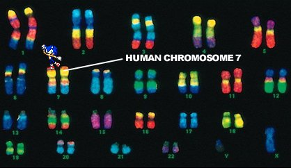
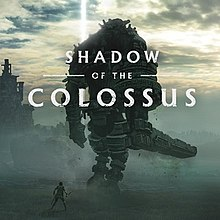

This page contains little trivia facts about Video Gaming and Video Game Consoles that you can utilize at your next get together, or to win those trivia contests held at your local bar. The following will be divided into two sections, and will be in no particular order.
Both console and video game facts will be taken from this website: https://www.gamesradar.com/101-game-facts-that-will-rock-your-world/.
The character Sonic The Hedgehog also shared the name of the 7th Human Chromosome in the Human Genome. However, the science community decided to pitch the whole "comedy" naming convention, and replaced their names for genes. Below is an image leading to the source.
The famously awful E.T. game for the Atari 2600 actually sold more than its most famous game, Space Invaders. E.T. sold 1.5 million, while Invaders only shifted a million.
In the original Super Smash Brothers Melee, the Princess Daisy trophy had a mysterious third eye on the back of its head. Unfortunate glitch? Or something more sinister?
In 1986, Nintendo released a special Disk System peripheral for the NES in Japan. Among its features was a microphone in the controller, which certain games used, including an updated version of the original Zelda. You could only destroy a certain enemy by shouting into the mic.
Sony's beautiful monster-toppling adventure game Shadow Of The Colossus was originally going to feature groups of characters on horseback working to take down the colossi cooperatively. This proved too taxing for the PS2's hardware, sadly.
There are currently over 100 million Game Boys in the world; both the original and the colour variant. 32 million of them are in Japan, and there are 44 million in America.
The Xbox was originally named DirectXbox, as it was initially designed to show how Microsoft's Direct X graphics technology could benefit the console market.